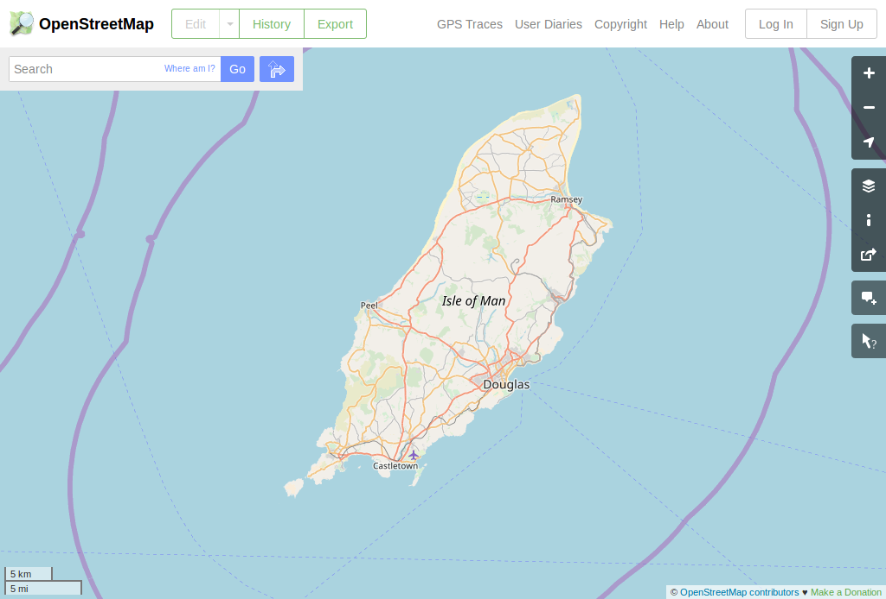
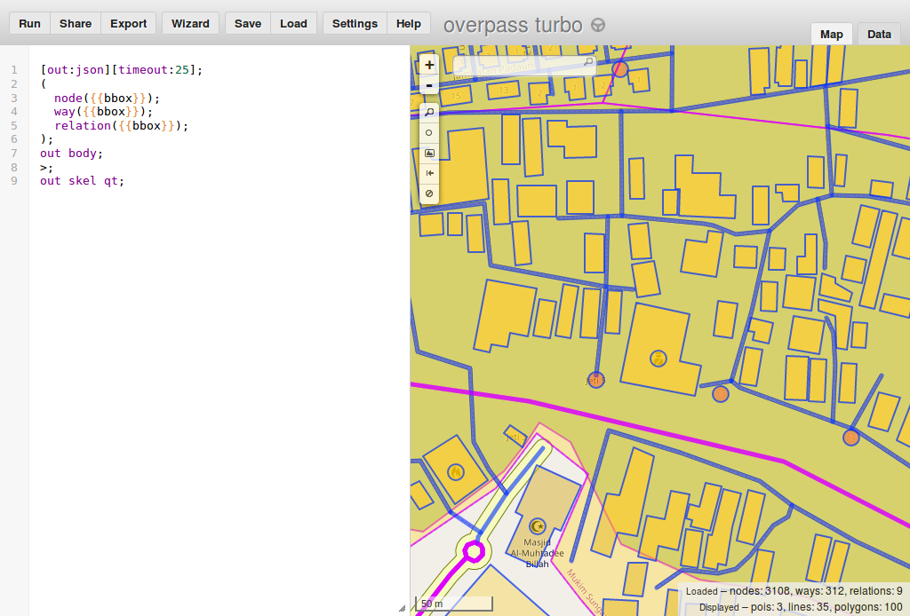
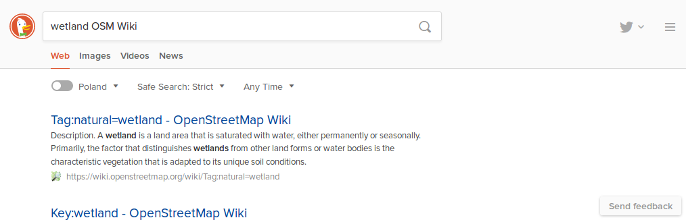

Geographic data mining and visualisation for beginners - Overpass turbo tutorial
Introduction
OpenStreetMap is a Wikipedia of maps. It is a massive geographic database collected by hobbyists and this data may be used by anybody.
It has mapped roads, buildings, parks, shops, forests, nature reserves, universities, police stations, beaches, prisons, geysers, reefs, hospitals, administrative borders, caves, lighthouses and many more.
This data is available in full for free under a friendly ODbL license. It is possible to use this data for a variety of projects. For example image below is a 3D printed map for blind based on OpenStreetMap data.

The easiest way to explore data collected by OSM users is to look at one of generated maps. You can do it by visiting openstreetmap.org and looking around.
Default map at that page displays a small part of data collected by the OpenStreetMap contributors. Depending on region various features should be visible - roads, rivers, railways, forests, buildings, shops, peaks, lakes, cemeteries, caves, hospitals, paths, springs and many more.
But using specific map designed by someone else is just start of using OpenStreetMap power. It is possible to extract specific data. For example, one may want to get
- museums
- playgrounds
- glaciers
- wetlands
- volcanoes
- geometry of a specific motorway
- or all data at once
On this page I will present my favourite method to do that - a tool called Overpass turbo.
It will be a series of exercises, starting from very simple ones with more interesting ones appearing later. No programming or OpenStreetMap knowledge will be required to understand them. Everything required to understand what is happening will be explained.
Initial ones will just download and visualise one group of objects.
Exercise 1 - museums
Let's open the first query. It should show a page with a map on the right and panel with mysterious text on the left. Ignore gibberish on the left and wait for the query to complete. Within seconds museums in Kraków should be marked on the map.
Exercise 2 - playgrounds
Now let's try something else - public playgrounds in Hamm - follow this link to try this query.
Try clicking on one of object. A box will appear with more detailed information about a given object. Do not worry if displayed information is mysterious or unclear, it will be explained soon.

Exercise 3 - everything
Maybe you just want to grab all data from given area and download it? And do entire processing and filtering in another tool like QGIS? Or just look at all what is mapped? Next query will show all data within a specified area. Note that this data is a direct copy of OpenStreetMap database so you will need some help in interpreting the data. Next sections should help with that.
So now a query to get everything.
I just mentioned that this query will get everything. Fortunately, it is not true. It will get everything within area visible in your map view. You can pan around to see that objects not inside this area are not downloaded. After moving view to a different location and select "run" button on top-left to see results of the query in a different location.
Like previous query only area visible on the screen is processed. Try to zoom out, pan to an area familiar to you and zoom in. But avoid running queries that will return too much data. Especially "show all data" will fail for large areas.
Filtering is necessary to display data for a larger area - attempt to download all data at once would not succeded. OSM database crossed 500 GB a long time ago, displaying all of it is a complicated task that requires more specialized tools than a web browser.
Queries that filter data (like ones presented before "get everything" query) will work for much bigger areas, some may even allow to scan the entire world and display all objects matching filter!
But before trying our luck with worldwide queries (it requires using the left panel, so we will leave it for later) so let's try a different adventure.
Exercise 4 - glaciers
Now you will make a new query.
Let's say that we want to query for glaciers.
- Go to http://overpass-turbo.eu/s/zWt (this link places you in the Himalayas so looking for a place with glaciers is not necessary).
- Press the "Wizard" button on the top menu. A window should appear
- Into box type:
natural=glacier - Press 'build and run query'
- you should see marked areas representing glaciers!
- Congratulations!
What just happened? We asked overpass turbo wizard to get all objects tagged with natural=glacier. It generated query for us and run it as instructed.
As objects marked with natural=glacier represent glaciers it means that we received objects marked as glaciers in a given region. These objects are now marked on our map.

Exercise 5 - wetlands
Previous examples maybe were interesting but covered only a small group of examples.
How one is supposed to guess what should be used to display wetland areas? Or universities? Or prisons? Or other feature among thousands possible?
Fortunately guessing is not necessary. There is a project documenting how tags are used and it is called OSM Wiki. Let's say that we want to display wetlands. In that case we should try googling <wetland OSM Wiki>
Results should include a page describing wetlands as one of results.
This page has a description that describes that natural=wetland is used to tag wetlands.
So we want to hunt for wetlands.
- Go to http://overpass-turbo.eu/s/zNS (this link places you at a specific area).
- Press "Wizard" button on the top menu. A window should appear
- Into box type:
natural=wetland - Press 'build and run query'
- you should see marked areas representing wetlands!
- Congratulations!
Exercise 6 - volcanoes
Now time for an exercise - try to find volcanoes: again google for something like <OSM wiki volcano> and use wizard to create a new query with the found tag value. If you have trouble see here for a help.
Using data (license, export)
So now you can to at least some types of queries that return some data. So it is a good moment to mention how this data may be used. Basically, you are allowed to do anything with it as long as you credit OpenStreetMap and its contributors and distribute derived work on the same license. For details see https://www.openstreetmap.org/copyright It will not be covered in this tutorial but you can process this data using also other software.
So how we may download this data as a file? See the button "Export". After clicking it you may select one of the standard data formats. Any reasonable tool for processing geodata will support at least one.
External resources
- Overpass turbo - page on OpenStreetMap Wiki
- Overpass turbo - Wizard - page on OpenStreetMap Wiki
- Overpass turbo examples - page on OpenStreetMap Wiki
- Overpass API - full documentation of query syntax. Opposite approach to this tutorial - page on OpenStreetMap Wiki
To be continued?
At least, for now, tutorial ends here. If you want more - send mail to matkoniecz@gmail.com, it will likely result in continued work on this page.
Status
Status: unfinished draft that is actively updated (as of August 2018).
Published part is unfinished and ends abruptly. But it is supposed to be free from mistakes, typos, unclear text, missing explanations, grammar problems etc. Please sent mail to matkoniecz@gmail.com if you spot anything wrong!
Please also send an email if any part is unclear - this page is supposed to be easy to follow for everybody, with no required OpenStreetMap or programming knowledge.
Feel free to send mail also if this page was useful for you :)
Exercise 7 - specific motorway
See above